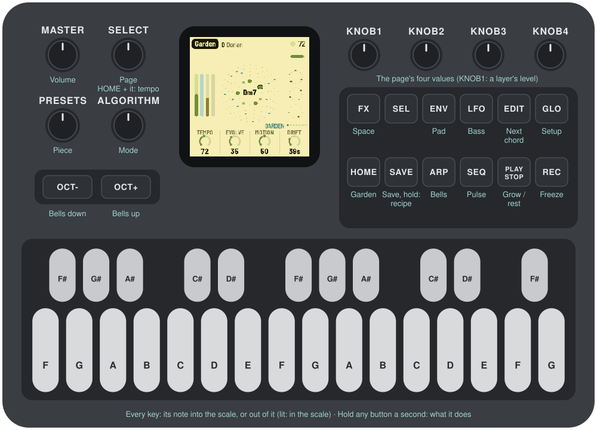
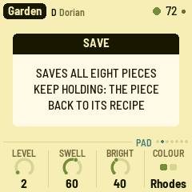
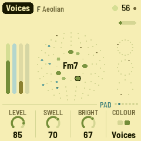
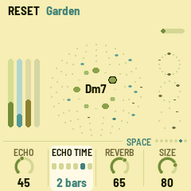
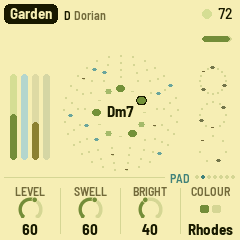
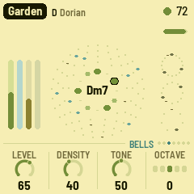
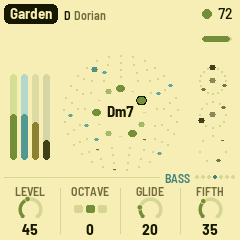
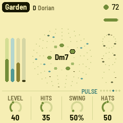
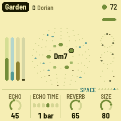
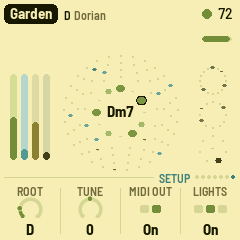

Manual
AMB-1 turns your M-VAVE FM-1 into a generative ambient machine, inspired by Brian Eno's Music for Airports. Switch it on and it starts playing by itself. You'll hear breathing voices, soft bells on tape loops of different lengths, a gliding bass and quiet Euclidean percussion, all through a short echo, a long tape loop and a plate reverb. You don't perform it so much as tend it: pick a piece and a scale, take notes out, put them back, and let it grow.

1Install
To try AMB-1 first, open the AMB-1 emulator. It runs the same code in your browser, with sound, and you can play it with a mouse, a touch screen or the keyboard.
To install it, open the web installer in Chrome or Edge. Connect the FM-1 with a USB data cable and press Install. Don't unplug it while it's writing. When it's done, the FM-1 restarts into AMB-1.
To go back to M-VAVE's firmware, use "Back to the stock firmware" at the bottom of the same page. Download the FM-1 V15 file from the link there, choose it and press the button. M-VAVE's own updater, M-UPGRADE, works too.
Installing other firmware is at your own risk. If the FM-1 ever won't start, see Recovering an FM-1 that won't start.
Install from the command line
Download the firmware file (for example amb-1.0.fwsc) from the releases page, get the AMB-1 source from GitHub (git clone --recursive https://github.com/charlesvestal/fm1-amb), install Python 3 with pip3 install mido python-rtmidi, and run:
python3 base/tools/fm1_install.py amb-1.0.fwsc2Getting started
AMB-1 starts playing as soon as you switch it on. Try this:
- Listen. The first piece, Garden, is playing in D Dorian, with the pad, bells, bass and a soft pulse. Turn MASTER to set the volume.
- Try another piece. Turn PRESETS. Each of the eight pieces has its own key, tempo, sounds and amount of movement.
- Change the scale. Press a key whose note is lit to take that note out of the scale, so nothing plays it. Press it again to bring it back. Press a key that isn't lit to add its note.
- Move on. Press EDIT, and the pad moves to the next chord at the start of the next bar.
- Freeze. Press REC to hold the chord and let the reverb ring on forever, while the bells and pulse go on above it. Press REC again to let it go.
- Shape a layer. Each layer has its own button: ENV for the pad, ARP for the bells, LFO for the bass and SEQ for the pulse. FX opens the space, HOME the garden as a whole, and GLO the setup. Turn KNOB 1–4 to set the four values at the bottom of the screen. KNOB 1 is always the layer's level. Turn SELECT to step through the pages.
- Rest. Press PLAY, and the garden stops growing while its sounds slowly fade out. Press PLAY again and it grows back.
Each piece keeps what you change. AMB-1 saves by itself while it rests, or you can press SAVE.
To find out what a button does, hold it for a second to see a card. Let go and nothing happens.
3Controls
The drawing at the top shows every control. Here they are in more detail.
| Control | What it does |
|---|---|
| Keys | The keys are the scale, and they light up for the notes in it. Press a key to add its note or take it out. Every octave of a note is the same key. The root always stays, and the scale keeps at least three notes. |
| PLAY | Grows or rests the garden. AMB-1 starts growing by itself when you switch it on. When it rests, the sounds slowly fade out and the reverb rings away. PLAY is lit green while it grows. |
| REC | Freezes the chord. The reverb rings on forever, while the bells and pulse go on dry above it. Press REC again to thaw. It's lit while frozen. |
| EDIT | Moves to the next chord at the start of the next bar, or right away while resting. |
| HOME | Opens the Garden page, for the whole garden. |
| ENV · ARP · LFO · SEQ | Open the layers' pages: Pad, Bells, Bass and Pulse. |
| FX · GLO | Open the Space and Setup pages. The lit button shows which page you're on. |
| SELECT | Turns to the previous or next page. To change the tempo from any page, hold HOME and turn SELECT. |
| ALGORITHM | Picks the mode: Ionian, Dorian, Phrygian, Lydian, Mixolydian, Aeolian, or pentatonic major or minor. It loads the mode's scale. Once you change the scale with the keys, it's Custom. |
| PRESETS | Picks the piece. For the list, see The pieces. |
| KNOB 1–4 | Set the four values on the screen. A few clicks always move one step at a time, and a quick turn speeds up, so half a turn sweeps the whole range. |
| OCT− / OCT+ | Move the bells down or up an octave, up to two either way, from any page. |
| MASTER | Sets the volume. |
| SAVE | Saves all eight pieces. Hold it for 1.5 s to put the piece back to its recipe. |
To find out what a button does, hold it for a second (any button but PLAY), and a card explains it. A key, a knob or another button puts the card away, and letting go does nothing else.

4The screen

- The top line shows the piece, its root and its mode. On the right are a slow beat light (a play triangle while resting), the tempo (EXT when it follows MIDI clock), a dot when there are unsaved changes, and the battery. Messages such as "ADDED F#" and "NEXT CHORD" show here for a moment.
- The battery shows three bars when it's full, and fewer as it runs down. At one bar or none it turns red, and it's time to charge. When it's plugged into a computer, it shows a lightning bolt instead. While it charges from a wall charger, the bars read high.
- At the top right of the garden, a thin bar fills up on the way to the next chord. While frozen, it says "held".
- The ring shows the twelve notes, with C at the top. Notes in the scale are green, the chord's notes a deeper green, and the root has an ink ring around it. The chord's name is in the middle.
- Around the ring are the four bell loops, 13, 17, 23 and 29 beats long, from the inside out. Each dot is a beat, and the blue ones hold a note. A playhead goes round each loop and glows when it rings a bell.
- On the left are the four layers' levels as they sound: pad (green), bells (blue), bass (olive) and pulse (dark).
- On the right are the three pulse rings: the thump (16 steps), the closed hat (12) and the open hat (7). The hits fade while the pulse sits a few bars out.
- At the bottom are the page's name and seven dots, one for each page, then its four values, one for each knob. Each value has a dial (or, for a switch, its positions). The one you're turning lights up.

5The garden
AMB-1 grows four layers from one scale and one chord.
- The pad is four breathing voices. Each one swells in, hangs and fades on its own cycle. The cycles have different lengths, around 11 to 19 seconds at first, like the tape loops of "2/1". Each voice takes its note of the chord as it starts, so the chord forms and dissolves instead of sitting still. The pad can be a filtered Rhodes that blooms brighter as it swells, or sung voices. Every so often (set by Drift), the chord moves to another one in the scale. Voices on notes the new chord shares hold to the end of their breath. The others fade out and breathe in again on their new notes.
- The bells are FM bells, struck softly like a piano slowed to half speed. Four tape loops play them, 13, 17, 23 and 29 beats long. Each loop holds a few notes, so the loops slide against each other and the melody never quite repeats. Each loop has its own shade of bell, and now and then a note rings with its octave.
- The bass plays the chord's root, low, soft and gliding, and sometimes leans on the fifth.
- The pulse is a soft thump tuned to the chord's root, a closed hi-hat and an open one. Each plays its own Euclidean pattern, over 16, 12 and 7 sixteenths, so they make polyrhythms. The patterns slowly turn, and gain or lose a hit.
Then comes the space, after Eno's chain for Discreet Music: a short tape echo, a long tape loop and a plate reverb. The tape loop is up to 5.6 seconds long and has two heads, and each repeat comes back darker and thinner. The space is most of what you hear. The echo is stereo, and it changes as it goes. With Motion up, its two heads wander across the stereo field and the repeats fall in changing patterns. Now and then the second head slides to another part of the loop, bending the repeats a little as it goes.
Two things move over it all:
- A slow tide takes a few minutes to swing between sparse and full. Sparse means fewer bells, a darker pad, a quieter pulse and more reverb. Motion sets how far it swings, and how far the smaller things wander: pitch, pan, the vowel and the echo's heads.
- With Evolve up, the layers take rests. The pulse sits out two to four bars, the bass skips a chord, or a bell loop goes quiet for one time round.
6The pieces
Turn PRESETS to choose one of eight pieces. Each piece is a recipe for the whole garden: the layers, the sounds, the tempo, key and mode, how busy it is and how far it moves. Each one remembers how you left it. To put the piece you're on back to its recipe, hold SAVE for 1.5 s. Tune, MIDI out and Lights are shared by all the pieces.
| Piece | What it is |
|---|---|
| Garden | D Dorian, 72: everything, gently. Rhodes. |
| Departures | C# Ionian, 60: soft, slowed-piano bells an octave down over a quiet Rhodes, as "1/1". |
| Voices | F Aeolian, 56: only the sung voices on unequal loops and a low bass, as "2/1". |
| Afternoon | G Lydian, 84: a bright Rhodes, busier bells, a light pulse. |
| Night Bus | A Aeolian, 96: the pulse forward, metallic bells, short echoes. |
| Shoreline | E pentatonic major, 64: dark, round bells lost in long echoes, as "2/2". |
| Glass | Eb pentatonic minor, 76: clangy bells an octave up, dense. |
| Tides | Bb Mixolydian, 70: sung voices, the most changeable (Evolve and Motion high). |
7The pages
Each layer has its own page and its own button, with four values on KNOB 1–4. KNOB 1 is always the layer's level. Turn SELECT to step through the pages in this order.
HOME: Garden
- Tempo goes from 30 to 120. You can also hold HOME and turn SELECT from any page.
- Evolve sets how restless the garden is. At 0, the loops repeat exactly. Turn it up, and now and then a bell note changes or moves as its loop comes round, the pulse patterns turn and gain or lose a hit, and the layers take rests.
- Motion sets how far the tide swings, and how much the pitch, pan, vowel and echo wander. At 0, the echo stays put, with one head left and one right.
- Drift sets how long a chord lasts before the pad moves on, from 20 seconds to 5 minutes, each time a little more or less. Press EDIT to move on now.
ENV: Pad

- Level sets the pad's volume.
- Swell sets how long the voices breathe, from a few seconds to about half a minute.
- Bright opens the pad's filter and brightens the Rhodes. With Voices, it also moves the vowel from "oo" to "eh".
- Colour picks Rhodes or Voices. Each piece keeps its own.
ARP: Bells

- Level sets the bells' volume.
- Density sets how many notes each loop holds, from none at 0 to five at the top. You'll hear the change as each loop comes round.
- Tone goes from round and softly struck to a long metallic clang.
- Octave moves the bells up to two octaves down or up. OCT− and OCT+ do the same.
LFO: Bass

- Level sets the bass's volume.
- Octave puts the bass one octave down, at home, or one octave up.
- Glide sets how slowly the bass slides to its next note, from a quick step to over a second.
- Fifth sets how often the bass leans on the fifth, halfway through a chord.
SEQ: Pulse

- Level sets the pulse's volume.
- Hits sets how many beats the three rings play. At 0, there's no pulse.
- Swing pushes the off sixteenths later, from straight (50%) to a heavy lilt (75%).
- Hats goes from dark and long to bright and crisp.
FX: Space

- Echo sets how much goes to the echoes.
- Echo time sets the tape loop's length: a dotted quarter, a half, a dotted half, or 1, 2 or 4 bars. At slow tempos, it's shortened to fit the loop's 5.6 seconds. The second head repeats at three quarters of that. With Motion up, it moves between two thirds, five eighths, a half and three eighths.
- Reverb sets how much goes to the plate.
- Size sets how long the plate rings, from a room to a long hall, and how many times the echo comes back.
GLO: Setup

- Root sets the key's root note, and the scale moves with it.
- Tune fine-tunes AMB-1 by up to 50 cents either way.
- MIDI out turns MIDI out on or off.
- Lights has three settings. With On, the keys light the scale, and the unlit buttons glow dimly so you can find them on the black FM-1. With Keys, only the keys light. Off turns the lights off.
The top right of this page shows how much of the FM-1's time the sound takes (CPU).
8MIDI
MIDI comes in over USB and the TRS jack, and goes out over USB.
- A note on channel 1 adds its note to the scale or takes it out, like a key.
- When MIDI clock comes in, AMB-1 follows its beat, and start and stop start and stop the garden. The screen shows EXT for the tempo.
- MIDI out is on by default. The pad plays on channel 1, the bells on 2, the bass on 3 and the pulse on 10. When AMB-1 runs on its own tempo, it also sends clock, start and stop. Turning MIDI out off sends all notes off.
Screen reader
AMB-1 can tell a screen reader what its screen shows. Connect the FM-1 by USB, open FM-1 Screen Reader in Chrome or Edge, and click Connect. It reads out the page you're on and its knobs, a knob's value as you turn it, the piece and its key, the notes you add or take out, help cards, every message, and the chord each time the garden moves on. It says them in words, such as "E flat pentatonic minor" rather than "Eb Pent min".
The page can speak with its own voice, or pass everything to your own screen reader (VoiceOver, NVDA, JAWS or TalkBack). Press W to hear the whole screen again: the page, the piece, the battery, the chord and the scale. The FM-1 stays quiet until the page connects, so a DAW on the same cable never sees it.
9Saving
AMB-1 keeps all eight pieces in the FM-1's memory, each as you left it: the knobs, the scale, the tempo, the pad's sound and the bells' octave, plus Tune, MIDI out and Lights.
- AMB-1 saves by itself a few seconds after a change, but only while it rests. Writing to the memory interrupts the sound for a moment, so it never saves while the garden grows. A dot at the top of the screen means there are unsaved changes.
- Press SAVE to save now, whether it's playing or not.
- Hold SAVE for 1.5 s to put the piece back to its recipe. That isn't saved until the next save, so if you switch off before then, your version comes back.
10Troubleshooting
To put the FM-1 in update mode, hold REC while you switch it on. If you installed m-bootloader with the web installer, the installer can reach the FM-1 from there, and holding PLAY instead opens m-bootloader's recovery menu. Without m-bootloader, REC starts the chip's own update mode, which only the rescue below can reach.
If a button or knob does the wrong thing, calibrate the panel. Hold OCT− and OCT+ while you switch the FM-1 on, and the screen asks you to press each button and turn each knob in turn.
If AMB-1 crashes, it shows a red CRASH screen and restarts by itself a few seconds later. The next start shows RESTARTED AFTER A CRASH and an address (PC ...) for a moment. If you report the problem, include that address and what you were doing.
If AMB-1 crashes twice in a row while starting, it starts in SAFE MODE instead. There's no sound, but USB works, so the web installer can reach it. Reinstall AMB-1, or put the stock firmware back from the same page. Press PLAY to try starting AMB-1 normally again. If even safe mode fails twice, the FM-1 drops into the chip's own update mode, and only the rescue below can reach it.
Recovering an FM-1 that won't start
An FM-1 in the chip's own update mode shows a blank screen, and neither the web installer nor M-VAVE's updater can see it. A script can put M-VAVE's firmware back, on a Mac, with the USB cable you already have.
Open Terminal, paste this line and press Return:
bash -c "$(curl -fsSL https://raw.githubusercontent.com/hugelton/felucca-bsp/main/tools/fm1_rescue.sh)"- If a window asks to install the command line developer tools, click Install. When it has finished, paste the line again.
- If it asks for a password, type your Mac password (nothing shows as you type) and press Return.
- When it says it's waiting, plug the FM-1 in and switch it on. If it starts normally instead, switch it off, then hold REC while you switch it back on. The script catches it, checks the chip, saves a backup of the FM-1's memory in the
fm1-rescuefolder in your home folder, and asks before it writes anything. - Type yes and press Return. Don't unplug anything until it says it's restarting the FM-1. The FM-1 then starts into its original firmware, and you can install AMB-1 again from there.
The script downloads M-VAVE's FM-1 firmware (V16 and V15) and JieLi's flash loader, and checks them against known fingerprints. It writes only the firmware area of the memory, never the bootloader or the FM-1's own settings, and checks everything it writes. Running it again is always safe. If it fails, copy everything in the Terminal window and open an issue. If the FM-1 never shows up at all, Felucca's FM-1-transporter (a small RP2040 board wired to the USB lines) can still reach it.
11Parameters
The defaults are Garden's; each piece has its own.
| Page | Value | Range | Garden |
|---|---|---|---|
| Garden | Tempo | 30–120 | 72 |
| Garden | Evolve | 0–100 | 35 |
| Garden | Motion | 0–100 | 50 |
| Garden | Drift | 20 s – 5:00 | 25 (about 40 s) |
| Pad | Level | 0–100 | 60 |
| Pad | Swell | 0–100 | 60 |
| Pad | Bright | 0–100 | 40 |
| Pad | Colour | Rhodes, Voices | Rhodes |
| Bells | Level | 0–100 | 65 |
| Bells | Density | 0–100 (0 to 5 notes a loop) | 40 |
| Bells | Tone | 0–100 | 50 |
| Bells | Octave | −2 – +2 | 0 |
| Bass | Level | 0–100 | 45 |
| Bass | Octave | −1 – +1 | 0 |
| Bass | Glide | 0–100 (20 ms – 1.2 s) | 20 |
| Bass | Fifth | 0–100 | 35 |
| Pulse | Level | 0–100 | 40 |
| Pulse | Hits | 0–100 | 35 |
| Pulse | Swing | 50%–75% | 50% |
| Pulse | Hats | 0–100 | 50 |
| Space | Echo | 0–100 | 45 |
| Space | Echo time | 1/4., 1/2, 1/2., 1 bar, 2 bars, 4 bars | 1 bar |
| Space | Reverb | 0–100 | 65 |
| Space | Size | 0–100 | 80 |
| Setup | Root | C – B | D |
| Setup | Tune | −50 – +50 cents | 0 |
| Setup | MIDI out | Off, On | On |
| Setup | Lights | Off, On, Keys | On |
| ALGORITHM | Mode | 8 modes, or Custom | Dorian |
12Credits
AMB-1 is free software under the Mozilla Public License 2.0. If you share a changed version, share the source of the files you changed too.
- The idea comes from Brian Eno's generative music: Music for Airports' tape loops of unequal length, and the echo and tape-delay chain of Discreet Music.
- The reverb is Jon Dattorro's plate ("Effect Design, Part 1", JAES 1997), by way of FoMni-1.
- The Euclidean rhythms are Godfried Toussaint's reading of Bjorklund's algorithm.
- The platform (hardware layer, USB, update loader, installer and storage) is fm1-base and felucca-bsp, from Felucca by Leo Kuroshita, Hügelton Instruments.
- The idea of running FM-1 firmware in the browser comes from Groove OS.
- The fonts are Barlow Semi Condensed and Terminus (SIL Open Font License).
M-VAVE and FM-1 are trademarks of their owners. AMB-1 is not affiliated with M-VAVE, Brian Eno or Hügelton Instruments.